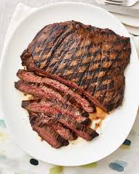
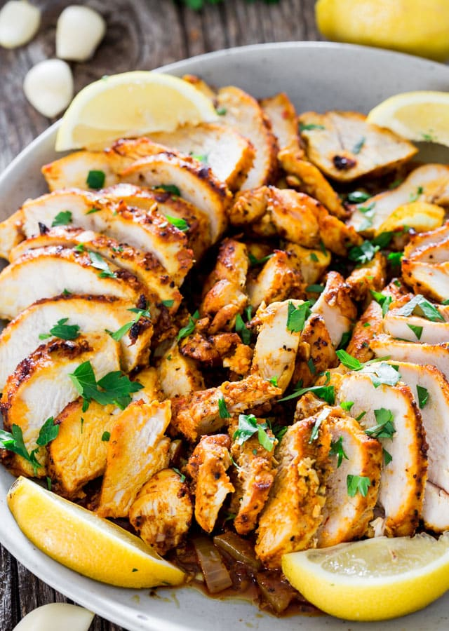

Pasta with tomato


some text
Details
- for 2 persons
- 15 min
- it does not prefer to eat it at night
list of ingredients
instructions
make the water boiling then put the pasta on it for 15 min ...
steak
Details
- for 2 persons
- 30 min
- it does not prefer to eat it at night
list of ingredients
- meat
- oil
instructions
make the surface of the cooking tool get hot then put the meat on it
checkin shawerma
Details
- for 3 persons
- 20 min
- it does not prefer to eat it at night
list of ingredients
- checkin
- oil
instructions
make the surface of the cooking tool get hot then put the cuted checkin on it